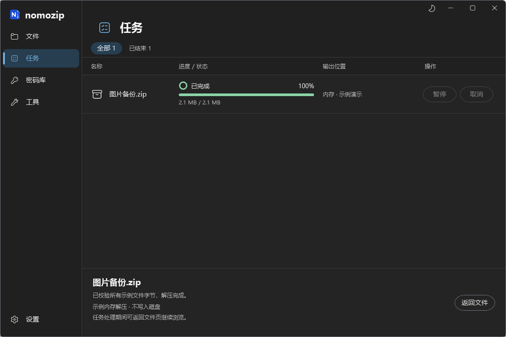
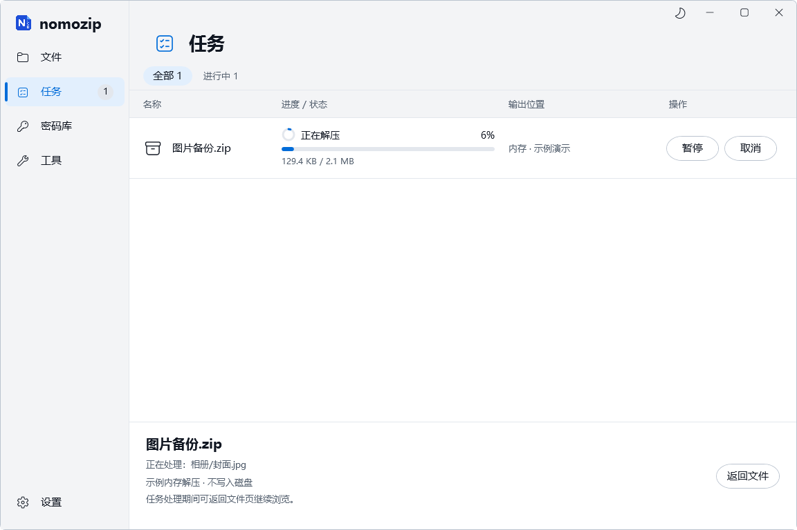
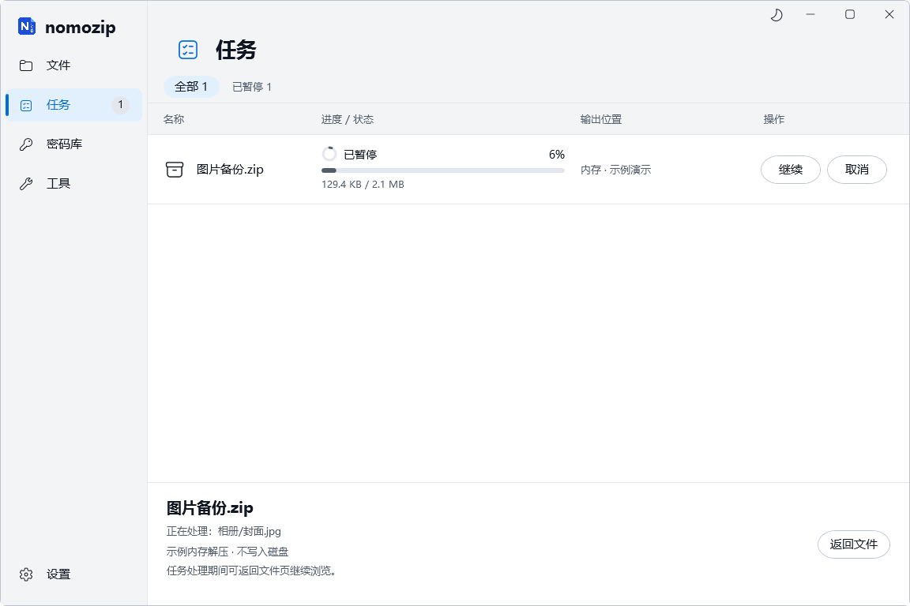
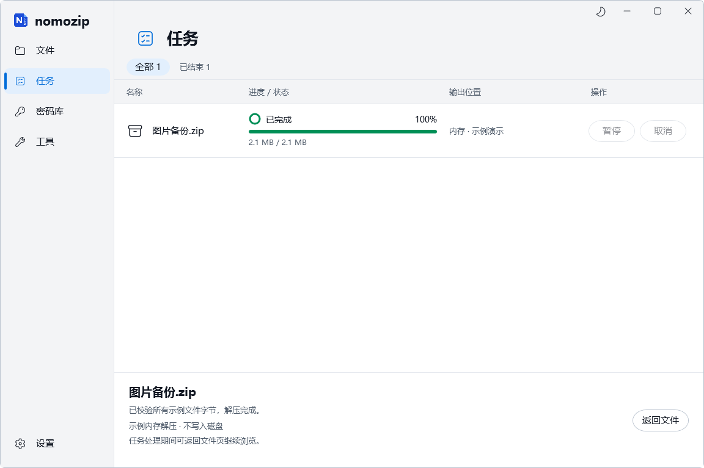
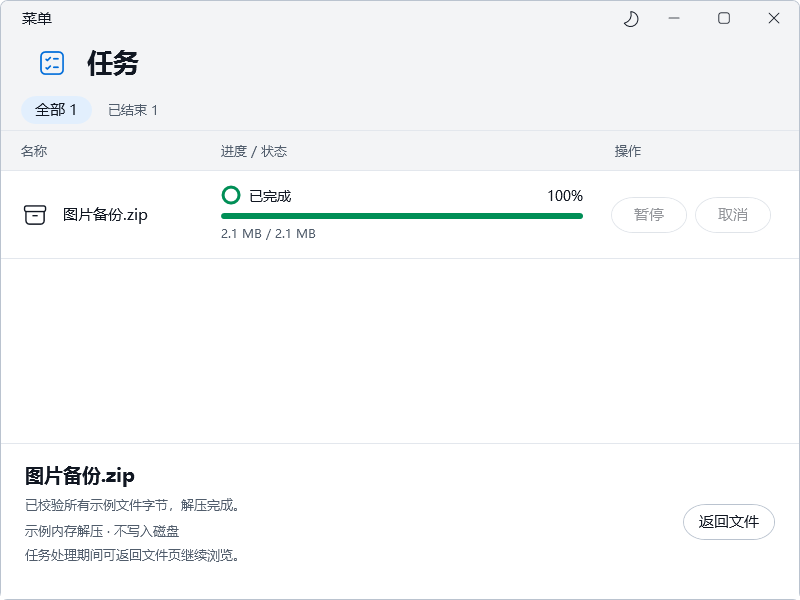
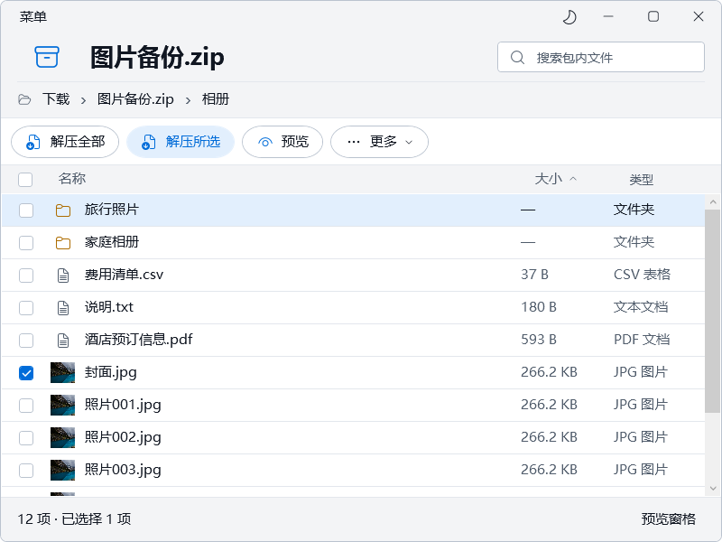
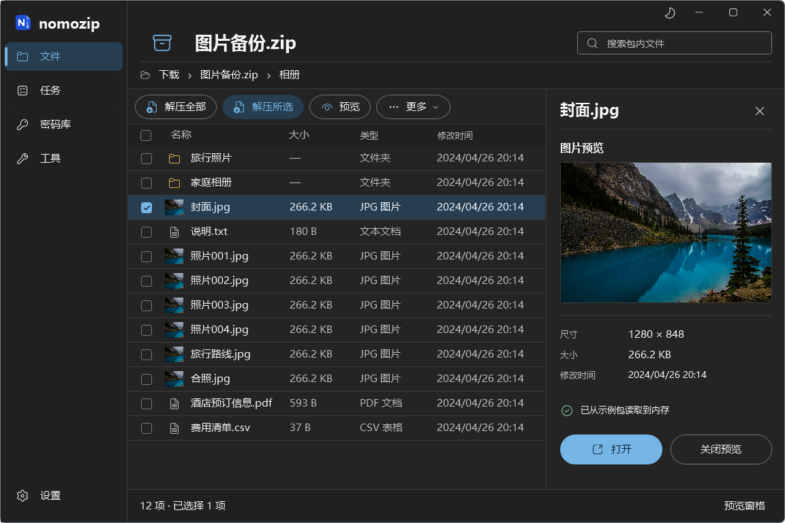
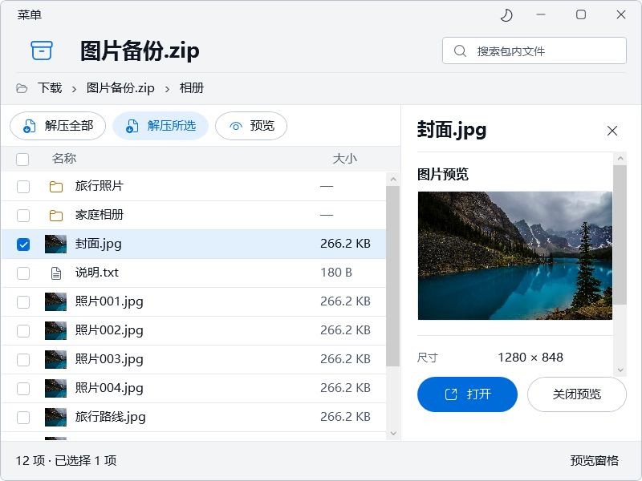
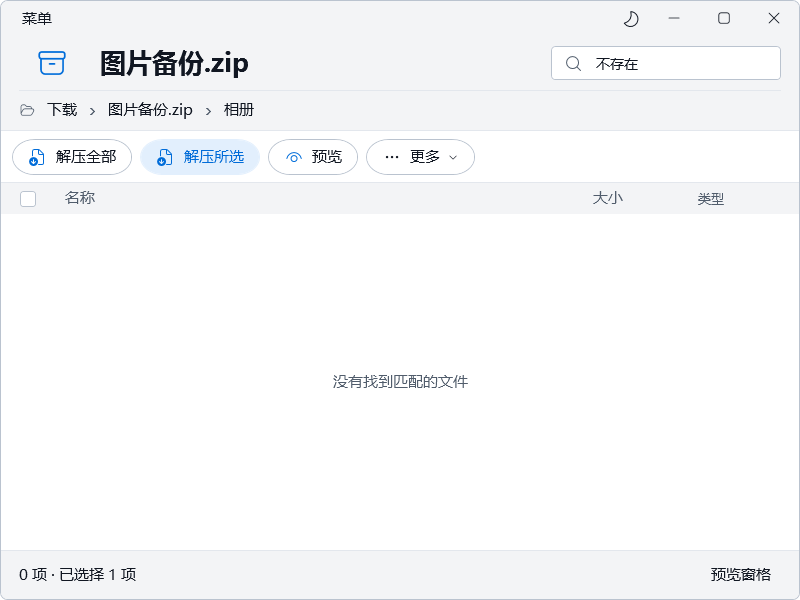

nomozip · 参考图复现版
目标为另一分支的「归档浏览与图片预览」概念图。待选 1、待选 2 保留。本页用于确认新的复现方向，尚未接入正式产品。
左侧是原概念图，右侧是实际运行 WPF 客户区的原始渲染截图。1152×768 DIP 以 4/3 倍离屏像素密度输出为 1536×1024，画布比例一致；不代表物理 DPI 已验收。原图与实际图均未修饰或拼接。
同画布叠加检查
0% 为原图，100% 为实现。对比区域边界、表头、行距和预览面板；照片、图标、真实统计及文字不同会形成重影，不能以全图像素误差评判还原度。
本轮反馈修正
已逐张检查 14 组概念图（含第 13 组新旧版，共 15 张）。解压操作换为文件提取图标；表头使用紧凑矩形悬停与内部焦点；执行进度进入独立任务页，圆环、条和数字同步。以下局部放大仅改变原始截图的显示位置与比例，点击可查看完整截图。
名称 · 实际鼠标悬停名称 · 实际按下大小 · 已排序，Tab 聚焦系统对比色 · 聚焦
任务区域与参考图
目标 · 图 05 的任务页 实现 · 一个实际示例任务
实现 · 一个实际示例任务
正在解压
暂停 · 所有进度保持
完成 · 100% 与禁用操作
800×600 任务区域
修正后的排序箭头
更多使用统一矢量下拉；名称/大小只有当前排序列显示方向箭头。以下为大小升序的实际窗口：

解压进度动画
真实读取生成 ZIP 的字节，刻意放慢，仅写入内存。220ms 缓动可关闭，圆环/条/百分比共用显示值；无浮层淡入，遵从系统减少动态效果；不是正式解压引擎速度。GIF 默认不自动播放。
其他检查画面
深色主题
800×600 最小窗口
搜索空结果
正在解压
x64 隔离 CI：37/37 项通过 · 源码 967175a · 16 张实际 PNG + 220 帧 GIF · 等待用户确认方向
差异与验收边界
| 项目 | 实现取舍 |
|---|
| 布局与组件 | 以相同比例复现左导航、双层顶部、胶囊操作、细线表格、右侧图片预览。以原始图与实际图并排/叠加检查，结果由用户判断。 |
| 字体与图标 | Microsoft YaHei UI 与统一 Fluent Regular 20；品牌保留原 nomozip 图标。避免继承概念图中模糊的字形和混合图标。 |
| 内容 | 换用 Brett Hamm 的授权照片和实际生成 ZIP。照片尺寸、大小及 12 项计数来自内容；不复制原图中的虚构数据。 |
| 尚未验收 | 完整产品页面、真实引擎、英文、长路径、多任务、物理 DPI、高对比系统切换与最终美观度。当前只做 x64 代表性核心稿。 |
设计参数与阶段范围 · CI 原始检查记录 · 照片：Brett Hamm / CC BY-SA 4.0